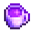

Stardrop Tea
This page or section contains unmarked spoilers from update 1.6 of Stardew Valley. Players may want to avoid or be cautious toward reading this article/section. |
| Stardrop Tea | |
|  | |
| A very special gift that would delight anyone. | |
| Information | |
| Source | Mayor's Manor • Golden Fishing Treasure Chests • Raccoon |
| Energy | Inedible |
| Sell Price | |
Stardrop Tea is an item that can be obtained from the Prize Machine in the Mayor's Manor or randomly found in Golden Fishing Treasure Chests (7% chance). It is also a possible reward for quests beyond the 5th one from the Raccoon. One Stardrop Tea is the reward for completing the Helper's Bundle.
Stardrop Tea can be gifted for 250 friendship points (1 heart). If given as a birthday gift or during the Feast of the Winter Star, it is worth 750 friendship points (3 hearts). Stardrop Tea does not count towards the daily or weekly gift limits, and can be freely gifted even if the limits have been reached.[1] It does not count as a loved gift for the Qi's Kindness quest.
Gifting
| Villager Reactions
| |
|---|---|
| Love | |
Tailoring
Stardrop Tea is not used in any tailoring. It can be used in dyeing, serving as a purple dye at the dye pots, located in Emily's and Haley's house, 2 Willow Lane.
Tips
- Stardrop Tea can be gifted alongside another item on a villager's birthday. Both will benefit from the increased friendship point gain.
References
- ↑ See NPC::receiveGift in the game code.
History
- 1.6: Introduced.